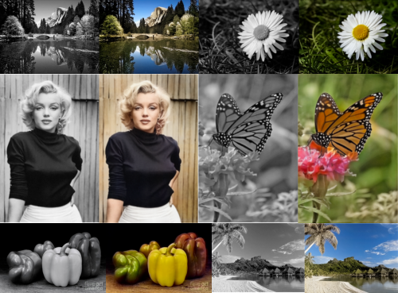

Automatic Image Colorizer

About
Automatically colors black & white images
Components:
- Deep Learning - Computer Vision
- Web development using Python (Flask)
- Algorithm modification for website integration
- Deployment on AWS cloud (Elastic Beanstalk)
See my Github for source code.
Based off of a pre-trained image colorization algorithm made by Richard Zhang, Phillip Isola, and Alexei A. Efros.
Demo

Citation
```
@inproceedings{zhang2016colorful,
title={Colorful Image Colorization},
author={Zhang, Richard and Isola, Phillip and Efros, Alexei A},
booktitle={ECCV},
year={2016}
}
@article{zhang2017real,
title={Real-Time User-Guided Image Colorization with Learned Deep Priors},
author={Zhang, Richard and Zhu, Jun-Yan and Isola, Phillip and Geng,
Xinyang and Lin, Angela S and Yu, Tianhe and Efros, Alexei A},
journal={ACM Transactions on Graphics (TOG)},
volume={9},
number={4},
year={2017},
publisher={ACM}
}
```